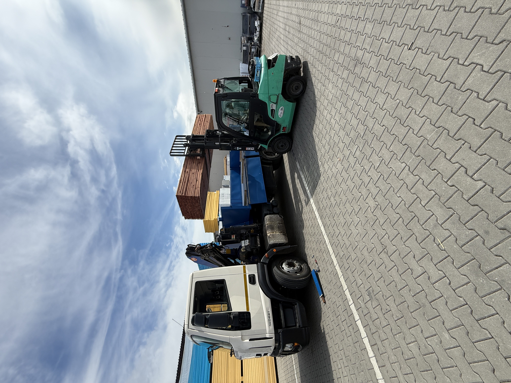

Unhošť a Svárov
Kontejnery a odvoz suti Unhošť, Svárov a okolí
V okolí Svárova a Unhoště řeším přistavení kontejneru, odvoz suti po rekonstrukci, zeminy, odpadu, dřeva i dovoz materiálu. Pro cenu pošlete obec, co se poveze nebo přiveze a fotku místa.
Ověření před objednáním
Ve Svárově a Unhošti si můžete předem ověřit, kdo opravdu přijede a podle čeho cenu počítá
Za Kontejnerovka.cz stojí Matyáš Mašín, IČO 01379178, plátce DPH. V nejbližší výjezdové oblasti dává smysl rychlá domluva, ale pořád platí, že cenu potvrzuje až adresa, typ materiálu, přístup a bezpečné místo pro auto.
Z terénu
Reálná technika, jasná cena, praktická domluva
Svárov a Unhošť mám doslova za rohem — sem jezdím nejčastěji a domluva bývá otázka jednoho telefonátu.
Chci cenu
Vlastní technikaDo Svárova a Unhoště jezdím vlastním autem, ne přes prostředníka.

Kontejner v provozuNa fotce je skutečný kontejner při sklápění, ne ilustrační vizuál.
U těžké suti nebo zeminy je rozhodující váha, ne jen objem hromady.
Proto pomůže fotka materiálu i místa, kde bude auto stát.
Nejbližší oblast
Svárov, Unhošť, Nouzov, Červený Újezd, Ptice, Pavlov, Kyšice, Malé a Velké Přítočno, Chyňava s Podkozím, Jeneč, Chýně, Rudná a obce na Kladensku řeším jako prioritní okolí výjezdu.
Co řeším často
Rodinné domy, zahrady, rekonstrukce, výkopy, příjezdové cesty, odvoz suti a zeminy i dovoz recyklátu nebo štěrku.
Pošlete tři věci a řeknu vám cenu
Adresu, co se poveze nebo přiveze, odhad množství, termín, fotku místa a informaci, zda může auto bezpečně zajet až k místu.
Proč Svárov a Unhošť dávají smysl
Zakázky v blízkém okolí se lépe plánují podle trasy a dostupnosti auta. Neznamená to automaticky nejnižší cenu, ale kratší dojezd může pomoci rychlejší domluvě, hlavně když potřebujete kontejner přistavit nebo odvézt v konkrétní den.
Odvoz i dovoz v jedné zakázce
U výkopů, drenáží a příjezdových cest se často nejdřív odváží zemina nebo suť a následně se vozí recyklát, štěrk nebo písek. Když to napíšete rovnou, dá se lépe navrhnout trasa i postup.
Odvoz suti a kontejner u Unhoště: co rozhoduje pro rychlou cenu
Nejrychlejší je zavolat z místa nebo poslat stručnou poptávku. U menších obcí kolem Unhoště je důležitá přesná adresa, protože příjezd, možnost otočení a stání kontejneru mohou výrazně změnit postup.
- Svárov, Unhošť, Červený Újezd, Ptice a Pavlov
- Jeneč, Chýně, Rudná, Braškov a Velká Dobrá
- odvoz suti, zeminy, betonu, dřeva a bioodpadu
- dovoz písku, štěrku, kačírku, recyklátu a zeminy
Lokální poznámka
Nejrychlejší bývá zpráva s adresou, fotkou a tím, kde může auto stát
Pro Unhošť a Svárov je důležitější reálný přístup než obecný slib. Ulice, dvůr, jednosměrka, stavba nebo firemní areál často rozhodnou víc než samotné množství.
Dotazy
Často pro Svárov, Unhošť a okolí
Řešíte odvoz suti v Unhošti nebo Svárově?
Ano. Odvoz suti v Unhošti, ve Svárově a okolních obcích řeším pravidelně. Pošlete adresu, jestli jde o čistou suť nebo směs, přibližné množství a ideálně fotku místa.
Jaké obce kolem Unhoště obsluhujete nejčastěji?
Typicky Svárov, Unhošť, Nouzov, Červený Újezd, Ptice, Pavlov, Kyšice, Malé a Velké Přítočno, Chyňavu s Podkozím, Jeneč, Chýni, Rudnou, Kladno a další obce podle trasy a typu zakázky.
Jak rychle lze přistavit kontejner kolem Unhoště?
Záleží na aktuální trase, typu odpadu, přístupu a termínu. Nejrychlejší je zavolat, protože po telefonu se dá hned ověřit, zda je zakázka reálně proveditelná.
Je levnější kontejner blízko výjezdu?
Kratší dojezd může pomoci plánování a dopravě, ale cenu vždy ovlivní také druh odpadu, množství, skládkovné, přístup a termín.
Co když nevím přesné množství odpadu?
Stačí praktický odhad a fotka. U suti a zeminy je důležitá hmotnost, u dřeva a bioodpadu spíš objem a složení.
Jste z okolí Unhoště a potřebujete rychlou cenu?
Zavolejte a řekněte obec, adresu, co se poveze, množství a místo přistavení. U horšího vjezdu pomůže fotka brány, dvora nebo příjezdové cesty.
Potřebujete kontejner ve Svárově, Unhošti nebo okolí?
Chci cenuRychlá poptávka
Pošlete poptávku rovnou z této stránky
Stačí telefon, obec a co se má odvézt nebo dovézt. Fotka místa nebo odpadu nacenění urychlí. Ozvu se s cenou nebo krátkým doplňujícím dotazem.